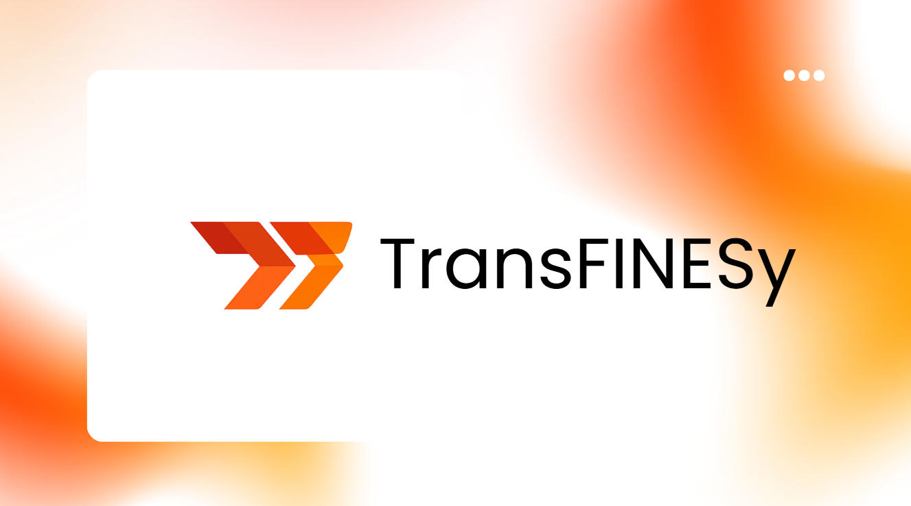

Frontend
HTML · CSS · React · TypeScript · Bootstrap · Tailwind CSS
IT STUDENT / CYBERSECURITY
I’m an Information Technology student at West Visayas State University in Iloilo City, building experience across web development, software projects, and cybersecurity.
West Visayas State University · Iloilo City
01 / ABOUT ME
I’m Justine Luis A. Dasa, a BS Information Technology student majoring in Cybersecurity at West Visayas State University, Iloilo City.
I enjoy working across the stack, from building usable front ends to implementing backend features. I have contributed as a Front-End Developer at USC-InfoSite and collaborated on academic software projects.
02 / MY TOOLKIT
Technologies and tools I use across development, deployment, and creative work.
HTML · CSS · React · TypeScript · Bootstrap · Tailwind CSS
JavaScript · Node.js · PHP · Python · Java · C++
MariaDB · PostgreSQL · MongoDB
Docker · Git · Proficient with GitHub
Vercel · XAMPP · NetBeans
Canva · Basic editing with Photoshop, CapCut, and Premiere Pro
Microsoft Office
03 / SELECTED WORK
Academic and university projects built with collaborators.

A Spring Boot web application for student fines, payments, attendance, and clearance management. RFID-based attendance helps make fine management more transparent and automated. Final project for OOP and DSA; contributed to both front end and back end.
A campus marketplace information system for student-to-student product and service exchange. Students can create accounts, browse listings, communicate, and manage marketplace activity. Contributed to both front end and back end.
04 / EDUCATION & CERTIFICATIONS
Building a foundation in information technology and cybersecurity.
EDUCATION
Major in Cybersecurity
West Visayas State University · Iloilo City
Expected graduation: 2028
Networking · Systems Analysis & Design · Database Management · Web Development · Human Computer Interaction · Integrative Technology · Object-Oriented Programming · Data Structures & Algorithms
CISCO NETWORKING ACADEMY
EXPERIENCE
05 / GET IN TOUCH
See my work and follow along with my projects on GitHub.
Visit GitHub